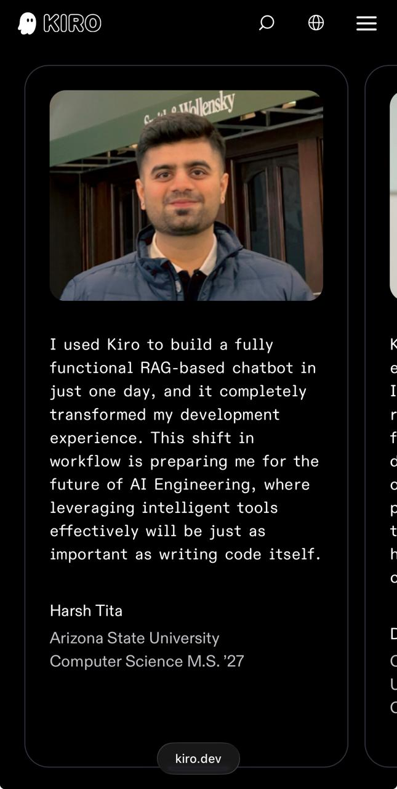
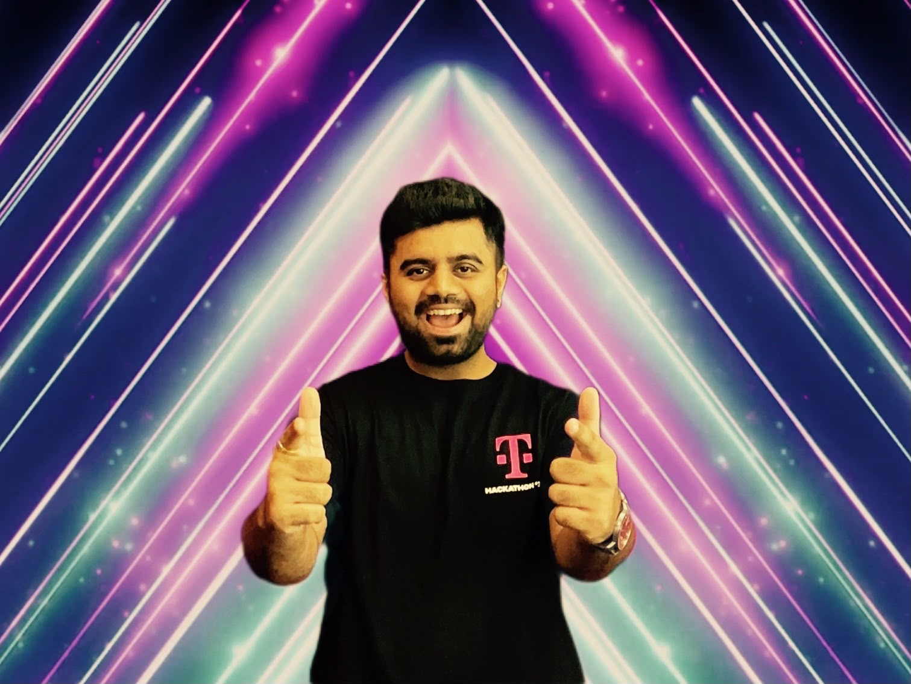
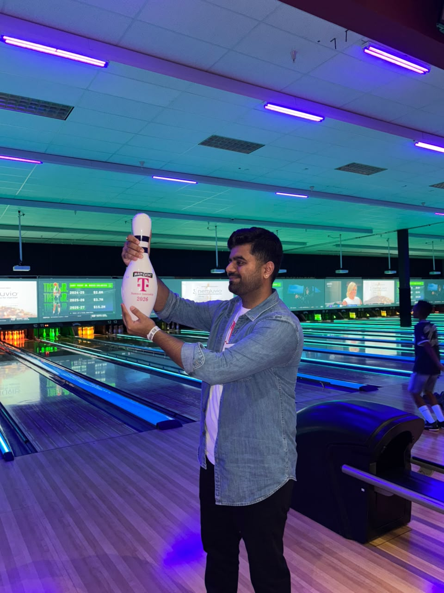
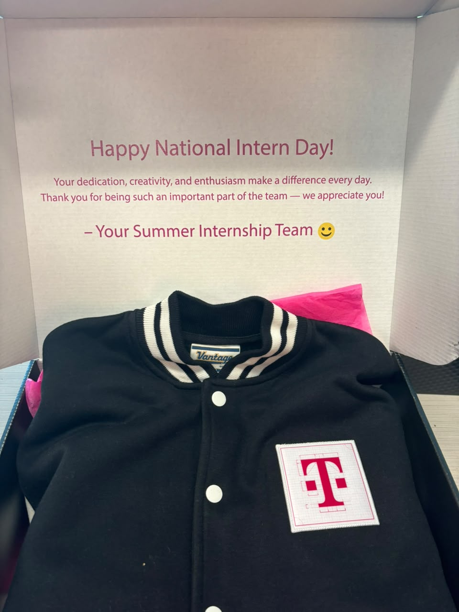
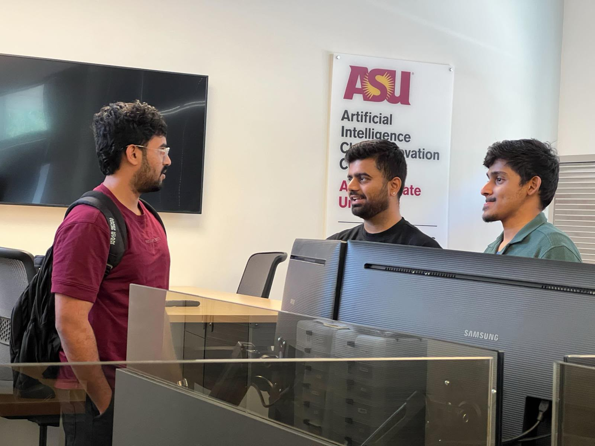

Cut AI infrastructure costs by 90% and lifted response accuracy from 20% to 80% by replacing
generic AWS crawlers with a focused Python crawler. Built an agentic email assistant for a
city government client using AWS Bedrock, Strands Agents, and RAG, dropping response time from
24 hours to 5 minutes with a 95% admin-approval rate. Automated end-to-end provisioning of
8 AWS services via AWS CDK (Infrastructure as Code).
Built an agentic AI delivery-prediction system using Cohere embeddings and an S3 vector store
to surface similar historical Jira capabilities, enabling portfolio managers to make data-driven
intake decisions from past go-live slippages, bugs, and delivery patterns. Engineered a serverless
pipeline (AWS Lambda + EventBridge) for daily vector-store updates and shipped an end-to-end
Next.js frontend with an AWS ECS Fargate backend.
CohereS3 Vector StoreFastAPINext.jsAWS LambdaAgentic AI
Deployed a Gen-AI summarization pipeline on AWS EC2 (Python backend, Angular frontend) that
transformed healthcare metrics into insights and boosted user engagement by 60%. Engineered
Python/SQL data-validation pipelines that cut manual QA effort by 80%, and automated ETL
workflows (AWS EMR, S3, boto3) to eliminate weekend manual operations, then scaled the
initiative by onboarding 4 engineers across daily, weekly, and monthly pipelines.
Built and maintained backend services, API development, and database optimization.
Focused on creating scalable and efficient server-side applications.
Research internship at India's space agency focusing on geospatial data analysis
and satellite image processing.
ResearchGeospatial AnalysisPythonData Analysis
Featured Projects
Real-world applications built with AI, data engineering, and full-stack technologies
🎯
Resume-Job Matching System
Intelligent system that matches resumes to job descriptions using NLP and machine learning.
Built with Python, implements semantic analysis and ranking algorithms.
PythonNLPMachine LearningSemantic Analysis
Python
Updated Apr 2026
🧠
Adaptive Knowledge Selector
AI system that dynamically selects and retrieves relevant knowledge based on context.
Implements advanced retrieval mechanisms for intelligent information processing.
PythonAI/MLRAGKnowledge Systems
Python
Updated Apr 2026
🌐
80.02% Accuracy
Stance Detection using LLMs
Fine-tuned Phi-3 Mini, Mistral 7B, and Llama 3.1 8B on the SemEval-2016 dataset using
Parameter-Efficient Fine-Tuning (PEFT) with LoRA and advanced prompt engineering, achieving
80.02% accuracy and outperforming baseline approaches.
PyTorchHugging FacePEFT / LoRALLMsNLP
Research ProjectNov 2025
💹
Cryptracker
Real-time cryptocurrency dashboard with market analysis, price tracking, and trend visualization.
Built with React and Node.js, integrates multiple crypto APIs.
ReactNode.jsREST APIReal-time Data
JavaScript
Full Stack
🍽️
Restaurant CRUD API
RESTful API for restaurant management system built with Golang.
Demonstrates clean architecture, database design, and API development best practices.
GolangREST APIPostgreSQLBackend
Golang
API Design
🌱
ReEarth: AI Sustainable Sharing Platform
Full-stack AI sustainability marketplace built at InnovationHacks 2.0, using 12 AWS Lambda
functions and Amazon Bedrock for borrow/buy/skip recommendations, real-time CO₂ tracking, and
sustainability scoring. Deployed serverless via AWS CDK, integrating Auth0, Stripe payments,
ElevenLabs voice search, Amazon Location Service, Next.js, and DynamoDB.
AWS BedrockAWS CDKNext.jsDynamoDBStripeAuth0
InnovationHacks 2.0
Apr 2026
Technical Skills
Technologies and tools I work with
💻
Programming Languages
PythonGolangJavaC/C++JavaScriptSQL
🤖
AI & Machine Learning
PyTorchTensorFlowScikit-LearnHugging FaceLLMsRAGAgentic AI
Moments from the journey — hackathons, teams, and the people behind the work

Featured on kiro.dev
"I used Kiro to build a fully functional RAG-based chatbot in just one day, and it completely
transformed my development experience. This shift in workflow is preparing me for the future of
AI Engineering, where leveraging intelligent tools effectively will be just as important as
writing code itself."
Harsh Tita, quoted as a student voice on Kiro's official website
(Kiro is AWS's agentic IDE).
Building with the team at the T-Mobile Hackathon 2026

Hackathon energy, T-Mobile 2026

Summer intern social, T-Mobile 2026

Happy National Intern Day, from the T-Mobile team

On-site at the ASU AI Cloud Innovation Center
Let's Build Something
I'm actively seeking full-time opportunities in AI/ML Engineering,
Software Development, and Data Engineering.
Open to roles where I can leverage LLMs, build scalable systems, and solve complex technical challenges.